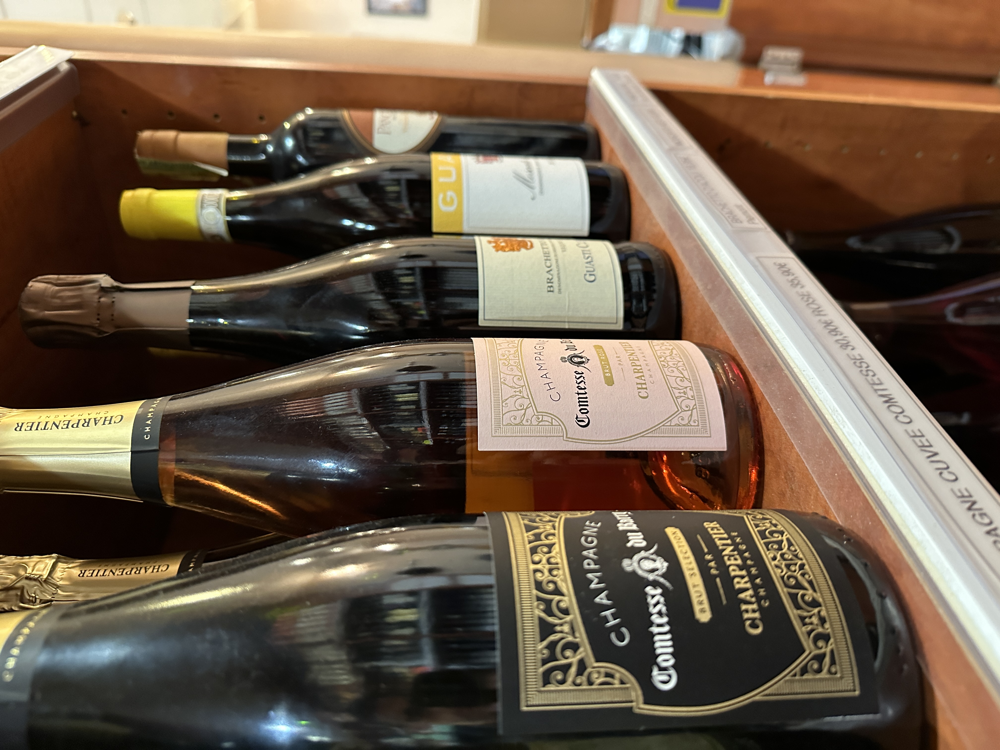

Découvrez le parcours inspirant d'un ancien commercial devenu commerçant passionné à la tête de l'épicerie fine italienne du Comptoir d'Italie à Meaux. Explorez la transition audacieuse de son histoire et plongez dans l'univers de stratégies marketing innovantes ayant contribué à l'élargissement de la clientèle. Appréciez les délices artisanaux soigneusement sélectionnés qui font de cette aventure une expérience gastronomique exceptionnelle.